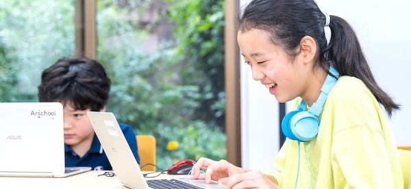

在校生限定のイノベーターコースもあります
「Claude」の新規プログラムコードの 80%以上を、 Claude自身が記述している。
99%、AIによる開発。
保護者として、子どもに
「AI時代でもプログラミングを学べ」
と強く言えますか？
プログラミング教育の価値は変わらない。
でも、AI教育もすごい価値がある。
13歳未満が使えない。
画像生成、動画、スライド作成・・・何を教えるべきか絞りきれない。
去年のツールがもう使えない。プロンプトのテクニックが不要に。
別画面でデモします
AIモデルやプロンプトのチューニングは発生するとしても、
あるいはカリキュラムをブラッシュアップするとしても、
ベースの学びは大きく変わらない
「誰でも作れる」≠「誰でも“いいもの・すごいもの”を作れる」
“いいもの・すごいもの”を作れる人とは？
そのためのスキル、必要な学びを体系化
| 評価軸 | スキル | レッスン例 |
|---|---|---|
| 企画・設計する力 | 何をつくるかを考える | ベースのゲームにオリジナル機能を追加する |
| 企画を具体化できる | お手本どおりの作品に挑戦 | |
| 構築・検証・修正する力 | バグを見つける | バグのある教材を渡し、発見させる |
| 修正したい箇所のみ修正する | 類似した敵のうち1つだけ動きを変える | |
| AI・テクノロジーの特性理解 | データ保存の仕組みを知る | 最高得点保存をつくる |
| スレッドをクリアする | 自由創作の中で声がけする | |
| やりきる力 | 自由創作の中で声がけする | |
誰でもすぐ始められる
本格的なプロダクトまで届く
多様な作品・表現が生まれる
スクラッチの理念だが、スクラッチ以上に強力。
楽しく子どもが前を向いて成長に向き合える、最高の教材
プログラミングよりも、特性やタイプを選ばない。万能な学習方法。
継続率への貢献はかなり高いと予想
AIの教育的効果に疑問を感じている方もいるので、教育感を伝える。
AIでできることへの興味関心はプログラミングのそれよりも高い。
まだ感度が高まっていないが、1年後にガラッと変わると予測する。
プログラミング教育の価値は引き続き高いにしても、
プログラミング教育市場は、AIの波に飲み込まれる可能性は高い。
何より、AIでのゲーム開発・アプリ開発は面白く、
教育的価値は極めて高い。
ぜひ一緒にAI教育を盛り上げて行きましょう。
プログラミング教室や学校などの教育機関に提供予定
1アカウント 3,000円前後 /月 で検討中
ご回答いただいた方に、
アルスタジオVのデモアカウントを提供します
AI×子どもの学びの最新情報を定期配信。
ぜひ友だち登録してください